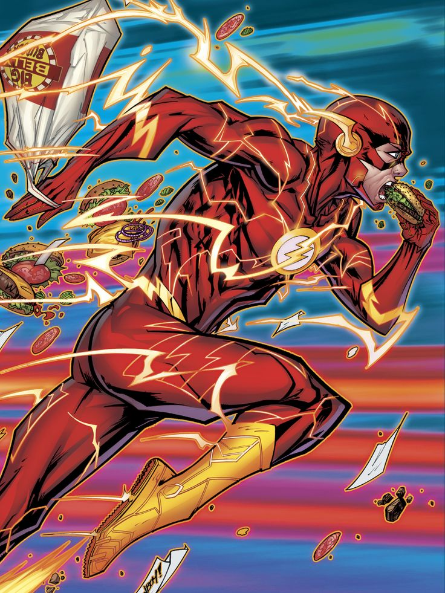

Who Is The Flash?
The Flash is Barry Allen, a scientist connected to the Speed Force. He uses super speed, quick thinking, and scientific knowledge to protect Central City.
Challenges and Victories
- Overcame the loss of his mother and worked to prove his father's innocence.
- Defeated Reverse-Flash, an enemy who could match his speed.
- Used the Speed Force to travel through time and across dimensions.
- Saved entire worlds during major crises alongside the Justice League.
Why I Chose Him
I chose the Flash because he combines unbelievable speed with optimism and humor. Even after serious losses, Barry keeps running toward danger to help others.
WHOOSH!